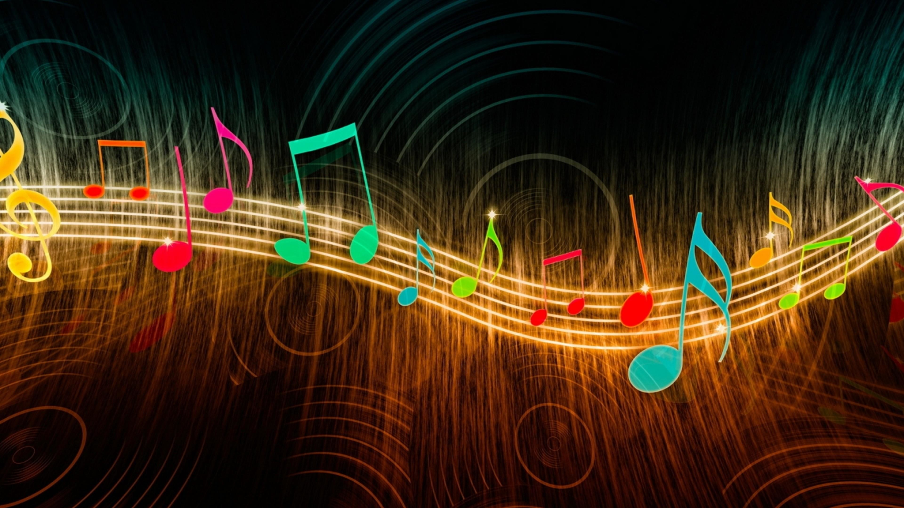

--Всем здарова и сегодня я поведую вам что я люблю!--
Спорт (англ. sport, сокращение от первоначального старофранц. desport— «игра», «развлечение») — организованная по определённым правилам деятельность людей, состоящая в сопоставлении их физических или интеллектуальных способностей, а также подготовка к этой деятельности и межличностные отношения, возникающие в её процессе. Спорт представляет собой специфический род физической и интеллектуальной активности, совершаемой с целью соревнования, а также целенаправленной подготовки к ним путём разминки, тренировки. В сочетании с отдыхом, стремлением постепенного улучшения физического здоровья, повышения уровня интеллекта, получения морального удовлетворения, стремления к совершенству, улучшению личных, групповых и абсолютных рекордов, славе, улучшения собственных физических возможностей и навыков. Спорт предназначен для совершенствования физико-психических характеристик человека. Спорт — составная часть физической культуры. Это собственно соревновательная деятельность и подготовка к ней. В нём ярко проявляется стремление к победе, достижению высоких результатов, мобилизация физических, психических и нравственных качеств человека. Спорт необходим для того, чтобы влиять на общество. Массовый спорт даёт возможность миллионам людей совершенствовать свои физические качества и двигательные возможности, укреплять здоровье и продлевать творческое долголетие.
Движение по восходящей спирали раскрытия всех талантов человека называется саморазвитием, а движение по нисходящей спирали, делает человека ближе к его далеким предкам, и возвращает к животному состоянию. Саморазвитие человека состоит из таких составляющих, как повышение собственной осознанности, умения управлять собой, развития силы воли, целеполагания, мотивации, и многих других качеств, которые повышают уровень жизни и способствуют реализации мечтаний и устремлений личности. Саморазвитие – это непрерывный процесс самосовершенствования и работы над собой, который происходит не только в одиночку, но и посредством взаимодействия с другими людьми, а также при помощи учителей, преподавателей, наставников, тренеров, коучей и тех людей, на которых человеку хочется быть похожим, и чьи взгляды он или она больше всего разделяют. Также саморазвитие (или его отсутствие) оказывает на людей большое влияние при выборе профессии, и к нему добавляется еще необходимость регулярного профессионального развития. Но хотя как профессиональные, так и деловые навыки очень важны для получения достойной работы, любой рекрутер вам скажет, что финальное решение о приеме очень часто принимается исходя из уровня саморазвития человека, потому что если на этом уровне он кажется перспективным для организации, то всему остальному можно будет научить.
Общение — взаимодействия между людьми, гл. о. непосредственные. В трактовке социальных отношений общение — форма их реализации, обеспечивающая (наряду с предметными опосредствованиями) воспроизводство и накопление человеческого опыта, кооперацию и разделение человеческой деятельности. Понятие “общение” используется и для характеристики взаимодействий между различными социальными и культурными системами (“межнациональное общение”, “общение культур”), т. е. в плане более широком, нежели межличностная связь. В любом случае общение не может осуществиться, минуя межиндивидуальные контакты; они в любых истолкованиях общения остаются “ядерными структурами”. Для философии общение представляет особый интерес, поскольку в нем концентрируются формы мышления и деятельности, общезначимые категории и субъективные намерения индивидов. Сложности в описаниях общения разъясняются определениями этого феномена как прямого и косвенного, непосредственного и опосредствованного. При прямом общении люди взаимодействуют “лицом к лицу”, в этой форме осуществляются совместность, непосредственная коллективность человеческой деятельности. Но как деятельность не сводится к прямой совместности, так и общение не редуцируется к непосредственным контактам. В ходе социальной эволюции возникают разнообразные предметные и знаковые средства, обеспечивающие косвенное общение между человеческими индивидами, связи разнообразных человеческих деятельностей. Проблематика культуры в значительной мере определяется их возрастающей ролью в жизни людей. Учет этого обстоятельства препятствует противопоставлению и разрыву понятий о деятельности и общении, о коммуникативности и продуктивности, о совместности и разделенности социального бытия людей. Понятие деятельности акцентирует внимание на реализации человеческих сил, понятие общения привлекает его к прямым и косвенным связям этих сил. Оба понятия с разных сторон выявляют формы движения, кооперации, трансляции человеческих сил и способностей в социальном пространстве и социальном времени. Развитие обществознания 20 в., в котором принцип разделения труда господствовал над цельными представлениями о социальных процессах, привело к упрощенным истолкованиям общения и деятельности: общение сводилось к межеубъектным взаимодействиям, адеятельность — к воздействиям человека на вещи.
 Музыка- это неотъемлемая часть человеческой жизни. С музыкой мы встречаемся везде и всюду, хотя часто этого и не замечаем. Мы все любим музыку: одному нравится классика, другой предпочитает современные ритмы. О стилях музыки можно говорить и спорить долго, но у каждого найдется хотя бы одна приятная сердцу и слуху мелодия. Все мы по-своему наслаждаемся музыкой, но каждый ли задумывался над тем, что такое музыка, какой она бывает и почему так нравится людям? Именно об этом сегодня и поговорим. Определение музыки Само слово «музыка» имеет древнегреческое происхождение, буквально оно переводится "искусство муз", средством воплощения художественных образов для которого являются звук и тишина, особым образом устроенные во времени В основе музыки всегда будет звук. Музыку также называют языком звуков. Можно посмотреть на определение музыки с эмоциональной стороны: Музыка – это самая прекрасная вещь на земле, это наши чувства, эмоции, воспоминания, картины природы, одушевленные предметы. Все что нас окружает можно показать, рассказать и выразить музыкой. Музыка – это чудесный дар, данный человечеству. Спросите у разных людей о том, что значит музыка для них, и получите разные ответы. Музыка может быть средством получения наслаждения, способом самовыражения, хобби (когда человек сам сочиняет), делом всей жизни (когда увлечение музыкой очень сильно) и т.д. Музыка не имеет выраженной материальной ценности, поскольку нематериальные её результаты проявляются, прежде всего, в духовной жизни человека и общества. Оказывая влияние на внутренний мир людей, искусство способно создавать или изменять нравственно-духовные ценности, обладая определённым содержанием. В отличие от многих других видов творчества, музыкальное содержание с трудом поддаётся формализации и описанию, так как требует не понятийного характера мышления.
_____________________________________________________________________________________